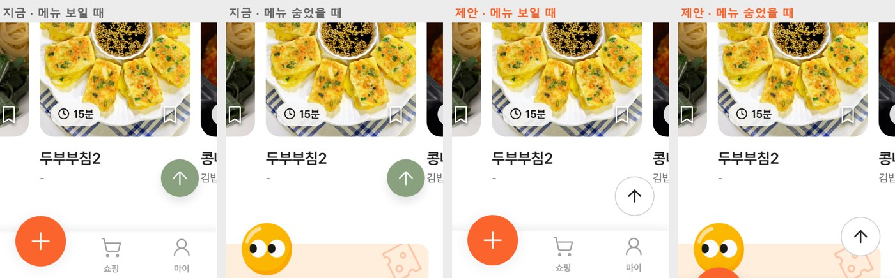
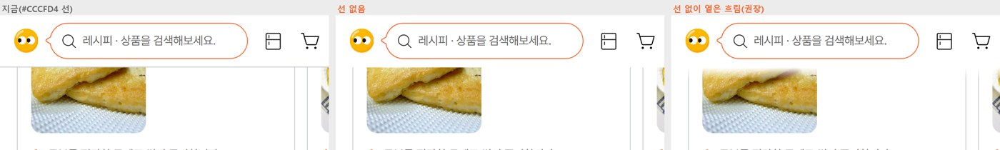
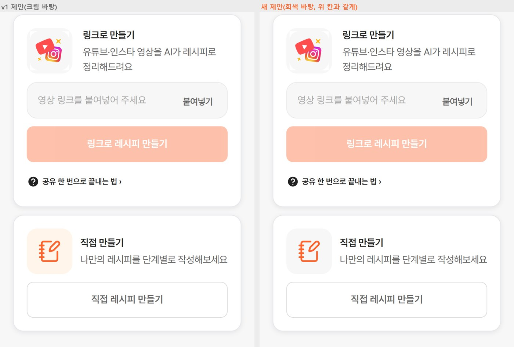
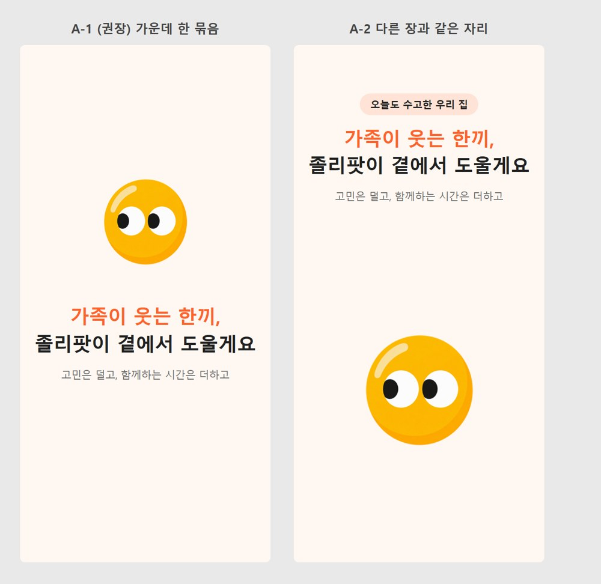
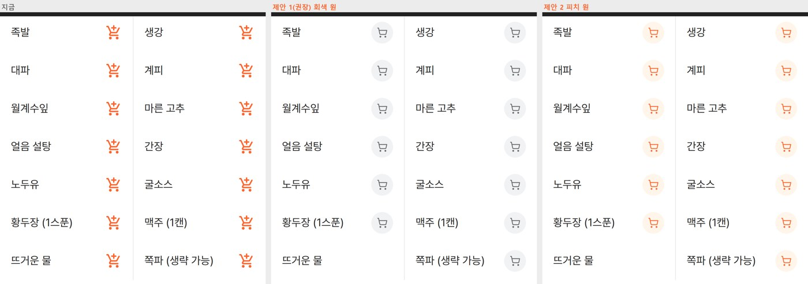

졸리팟 개발 앱 화면 검토 11가지
- 03 회색 선: 선은 없애는 게 맞습니다. 대신 상단 바 아래 14px만 옅게 흐려 사진·글이 칼로 자른 듯 끊기지 않게 합니다.
- 06 직접 만들기 아이콘 바탕: 크림이 아니라 위 칸과 같은 회색 #F7F7F7이 맞습니다. 오렌지는 아이콘에만 씁니다.
- 10 마지막 장: 「졸리팟」 글씨를 빼고 캐릭터 → 제목 → 부제를 한 묶음으로 가운데보다 조금 위에 둡니다(A-1).
- 11 재료 장바구니 아이콘(새로): 오렌지 「카트+」 14개 반복이 원인입니다. 32px 회색 원 + 둥근 선 카트로 바꾸고, 「뜨거운 물」 버튼은 뺍니다. 오렌지는 나중에 졸리팟 상품 재료에만 씁니다.
- 07 저장: 내릴 때 위에 남는 것은 칩 줄만이 맞습니다. 지금은 작은 제목 50px + 칩 46px = 96px이 남습니다. 제목을 빼면 50px가 더 보입니다.
- 08 레시피 상세: 두 줄(116px)을 한 줄(56px)로 합칩니다. 영상 줄에 「←」만 넣으면 위 줄을 없앨 수 있습니다. 조금만 올리면 원래 상단 바가 돌아옵니다.
- 09 컬렉션 담기 창: 지금은 높이 384px 고정이라 컬렉션이 2.5개만 보입니다. 창을 화면 높이의 86%까지 늘리고 줄 높이를 80px에서 64px로 줄이면 한 화면에 8~9개가 보입니다. 10개가 넘으면 「컬렉션 찾기」 칸을 둡니다.
- 10 앱스토어 마지막 장: 크림이 낫습니다. 1·2줄은 같은 크기지만 다른 장 제목보다 약 20% 작습니다. 「졸리팟」은 맨 아래 작은 글씨가 아니라 캐릭터와 묶어 가운데에 두길 권합니다.
- 6가지 모두 고치는 게 맞습니다. 3번 「내렸을 때 회색 선」만 동작은 맞고 색이 진합니다.
- 원인은 대부분 하나입니다. 아이콘이 화면마다 다른 묶음에서 왔습니다. 하단 메뉴는 선 아이콘(lucide), 상단은 채운 모양 아이콘·그림 파일이 섞여 있습니다. 색도 #000·#1F1F1F·#515151·#9E9E9E로 4가지입니다. 「상단·하단 아이콘은 한 묶음, 한 굵기(1.75), 한 색(잉크 #212121)」 규칙 하나로 1·2·4·5번이 같이 풀립니다(2번 「맨 위로」 화살표 포함).
- 개발사에 보낼 문장은 항목마다 [복사]로 넣었습니다. 화면에 보이는 문제라 버그 시트에 넣어도 되는 항목들입니다.
01. 하단 메뉴 — 글자가 빽빽하고, 아이콘이 위에 붙어 있음
| 재 본 값 | 지금 | 제안 | 이유 |
|---|---|---|---|
| 메뉴 높이 | 53px | 62px (+ 아이폰 아래 여백은 지금처럼 따로) | 위아래 숨 쉴 자리를 만듭니다. |
| 아이콘 위 여백 | 6px | 9px | 메뉴 윗선과 아이콘이 붙어 보이던 것을 풉니다. |
| 글자 크기 | 10px | 12px | 우리 가이드의 가장 작은 글자가 12px입니다. 한글은 획이 많아 같은 크기의 영어보다 빽빽해 보입니다(아이폰 기본 메뉴는 10pt지만 영어 기준). |
| 글자 굵기 | 600(전부) | 고른 칸 600 · 나머지 500 | 작은 글자를 모두 굵게 쓰면 뭉쳐 보입니다. 고른 칸만 굵게 해야 차이가 납니다. |
| 안 고른 칸 색 | #9E9E9E(옅은 회색) | #666666(미드그레이) | 가이드는 #9E9E9E를 「누를 수 없는 것·안내 글자」에만 씁니다. 메뉴는 누르는 곳이라 미드그레이가 맞습니다. |
| 아이콘 선 굵기 | 1.5 | 1.75 | 12px 글자와 무게를 맞춥니다. 상단 아이콘도 같은 굵기로 갑니다(2·4번). |
| 자간 | -0.2%(사실상 0) | 0 그대로 | 작은 글자는 자간을 좁히면 더 빽빽해집니다. 가이드의 -0.3px는 제목·본문용입니다. |
| 칸 간격 | 5칸 똑같이 78px | 그대로 | 가로 간격은 고르게 나뉘어 있습니다. |

02. 오른쪽 아래 「맨 위로」 버튼 색 v1-2에서 바로잡음
v1·v1-1에서는 「상단 바로가기」를 홈 상단의 냉장고·장바구니 아이콘으로 잘못 알아들었습니다. 대표님이 말씀하신 것은 오른쪽 아래 초록 동그라미 「맨 위로」 버튼입니다. 냉장고·장바구니 아이콘 내용은 04번(상단 아이콘 통일)으로 옮겼습니다.
| 재 본 값 | 지금 | 제안 | 이유 |
|---|---|---|---|
| 바탕 | #89A17F(폐기한 세이지 계열) | 흰색 #FFFFFF | 화면 가운데 오렌지 「+」(레시피 만들기)가 주인공입니다. 색 있는 동그라미가 하나 더 있으면 서로 다툽니다. 「맨 위로」는 보조 버튼이라 가이드의 보조 버튼 색(흰 바탕 + 회색 테두리 + 잉크)이 맞습니다. |
| 테두리·그림자 | 테두리 없음 · 그림자 있음 | 1px #CCCFD4 테두리, 그림자 없음 | 가이드는 「그림자와 테두리를 같이 쓰지 말고 테두리만」입니다. 사진 위에 떠도 테두리 덕에 경계가 보입니다. |
| 화살표 | 흰색, 굵기 1.5 (대비 2.81:1) | 잉크 #212121, 굵기 1.75 (대비 16.1:1) | 01·04번의 아이콘 규칙(lucide, 1.75, 잉크)과 같게 맞춥니다. |
| 크기 | 42×42px | 44×44px | 누르는 곳의 최소 크기가 44px입니다. |
| 오른쪽 여백 | 20px | 16px | 화면의 다른 내용(카드·제목)과 같은 16px 줄에 맞춥니다. |
| 아래 위치 | 늘 아래 90px | 메뉴 보일 때: 메뉴 위 16px / 메뉴 숨었을 때: 아래 24px(+아이폰 안전 여백) | 지금은 하단 메뉴가 숨어도 버튼이 90px 위에 그대로 떠 있어 어색합니다. 메뉴와 함께 움직여야 합니다. |
| 나타나는 때 | 약 300px만 내려도(화면의 3분의 1) | 두 화면쯤(약 1,600px) 내렸을 때 | 지금은 조금만 내려도 바로 떠서 늘 화면을 가립니다. 맨 위로 돌아갈 필요가 생기는 것은 꽤 내려간 뒤입니다. |
| 레시피 상세 | 아래 댓글·공유·저장 줄과 7px 간격 | 그 줄 위 16px | 지금은 거의 붙어 있어 잘못 누르기 쉽습니다. |

같은 측정에서 함께 보인 것: 하단 메뉴가 다시 안 나옴
홈·쇼핑에서 내리면 하단 메뉴가 숨는데, 960px을 다시 올려도 돌아오지 않았습니다. 맨 위까지 올려야 다시 나왔습니다. 그동안에는 다른 칸(저장·쇼핑·마이)이나 「+」로 갈 길이 없습니다.
03. 홈에서 내리면 상단에 생기는 회색 선
- 지금: 내리면 상단 바 아래 1px #CCCFD4 선이 생깁니다. 이 색은 가이드에서 「카드 테두리」 색이라 선이 도드라집니다.
- 하단 메뉴와 짝이 안 맞습니다. 하단 메뉴 윗선은 #F7F7F7에 옅은 그림자를 씁니다. 위·아래를 같은 무게로 맞추는 게 좋습니다.
- 화면마다 다릅니다. 컬렉션 화면은 맨 위에서부터 #CCCFD4 선이 늘 있습니다. 「맨 위에서는 선 없음 → 내리면 1px #E5E7EB」를 모든 상단 바의 규칙으로 정하면 됩니다.

이 항목의 전달 문장은 v1-3에서 바뀌었습니다. 아래 「v1-3 다시 봄」 문장을 쓰세요.
v1-3 다시 본 결론: 선은 없애고, 아래에 옅은 흐림만 두기 v1-3 다시 봄
- 홈 상단은 선이 없어도 경계가 보입니다. 노른자 캐릭터와 오렌지 테두리 검색창이 이미 굵은 띠를 만들기 때문입니다. 여기에 회색 선을 더하면, 내릴 때마다 화면 폭 전체에 줄이 하나 더 생깁니다.
- 흐림은 「선」으로 안 보입니다. 내용이 상단 바 밑으로 들어갈 때만 자연스럽게 옅어집니다. 애플도 iOS 26부터 이렇게 가장자리에서 내용이 옅어지는 방식(스크롤 가장자리 효과)을 기본으로 씁니다.
- 다른 화면도 같은 규칙으로 갑니다. 컬렉션 화면처럼 맨 위부터 늘 있는 선도 없애 「상단 바는 선 없음 + 내릴 때만 아래 흐림」 하나로 맞춥니다. v1의 「#E5E7EB 선」 제안은 이것으로 바꿉니다.

04. 마이·레시피 상단의 홈 아이콘이 하단 메뉴 홈과 다름
| 어디 | 뒤로가기 | 홈 |
|---|---|---|
| 마이페이지 · 레시피 상세 · 검색 · 베스트 · 타임특가 · 주문 내역 · 찜 · 카테고리 · 기획전 (9개) | 화살표 그림 파일(back.svg) | 채운 모양 집, #515151(가이드에 없는 회색) |
| 상품 상세 · 장바구니 · 냉장고 (3개) | 꺾쇠 「<」(lucide, 굵기 1.3) | 없음 |
| 컬렉션 (1개) | 다른 화살표(lucide arrow-left) | 없음 |
| 하단 메뉴 | — | 선 아이콘 집(lucide house, 굵기 1.5) |
홈 상단 냉장고·장바구니도 같은 규칙입니다. 지금은 안을 채운 모양(#1F1F1F·#000)이라 오렌지 테두리 검색창 옆에서 무겁게 보입니다. 같은 잉크색이라도 선 아이콘으로 바꾸면 가벼워집니다(아래 그림 「홈」 줄).
권하는 규칙: 상단 바 아이콘은 하단 메뉴와 같은 lucide 묶음을 씁니다. 뒤로가기는 「←」(arrow-left), 홈은 하단 메뉴와 같은 집(house)입니다. 24px, 굵기 1.75, 잉크 #212121로 하고, 누르는 영역은 44×44px로 둡니다. 「←」을 고른 이유는 이미 9개 화면이 화살표 모양이라 바꿀 곳이 가장 적기 때문입니다.


05. 상품 상세에 홈 아이콘이 없음
어느 화면에 홈을 둘지 규칙
- 하단 메뉴 칸 첫 화면(홈·저장·쇼핑·마이): 뒤로가기·홈 없음. 하단 메뉴가 그 역할을 합니다.
- 그 아래로 들어간 화면: 뒤로가기 + 홈. 레시피·상품 상세, 장바구니, 냉장고, 컬렉션, 검색 결과, 주문 내역 등입니다.
- 쓰는 중인 화면: 홈 없음, 뒤로가기(또는 ✕)만. 주문서·결제, 레시피 작성·편집, 링크로 만들기입니다. 홈을 잘못 눌러 쓰던 내용·결제를 잃지 않게 하려는 것입니다.
- 앞 화면 없이 바로 열렸을 때(공유 링크 등): 뒤로가기를 누르면 홈으로 보냅니다.

06. 만들기 — 「직접 만들기」 아이콘 색
- 위 칸 「링크로 만들기」: 유튜브 빨강·인스타 색이라 「남의 영상」이라는 뜻이 바로 읽힙니다.
- 아래 칸 「직접 만들기」: 졸리팟 안에서 내가 쓰는 것이라 졸리팟 색(오렌지)이 맞습니다. 바탕을 피치크림으로 두면 두 칸이 「밖에서 가져오기 / 졸리팟에서 쓰기」로 구분됩니다.
- 모양: 「문서 파일」보다 「공책 + 펜」이 「직접 쓴다」에 가깝습니다(lucide notebook-pen, 굵기 1.75).

이 항목의 전달 문장은 v1-3에서 바뀌었습니다. 아래 「v1-3 다시 봄」 문장을 쓰세요.
같은 화면에서 하나 더: 꺼진 버튼이 흐린 오렌지
링크를 넣기 전 [링크로 레시피 만들기] 버튼이 흐린 오렌지입니다(위 그림). 가이드는 꺼진 버튼을 회색 #E5E7EB 바탕 + #9E9E9E 글자로 정하고, 「흐린 오렌지는 여전히 누르라는 것처럼 보인다」며 금지하고 있습니다.
v1-3 다시 본 결론: 바탕은 크림이 아니라 위 칸과 같은 회색 v1-3 다시 봄
- 두 칸은 같은 종류입니다. 둘 다 「레시피 만들기 방법」이라 같은 틀(같은 바탕·같은 크기)이어야 나란히 고르는 선택지로 읽힙니다. 차이는 아이콘이 보여 주면 됩니다(유튜브·인스타 색 / 졸리팟 오렌지).
- 크림은 이 화면에서 다른 뜻으로 쓰입니다. 피치크림은 「담아뒀어요」 안내 상자처럼 알림·강조 바탕입니다. 아이콘 바탕에까지 쓰면 아래 칸만 「추천」처럼 보일 수 있습니다.
- 위 칸 아이콘은 회색 바탕이 그림 파일에 함께 들어 있습니다. 위 칸을 크림으로 맞추려면 그림을 다시 만들어야 하니, 아래 칸을 회색에 맞추는 쪽이 일도 적습니다.

07. 저장 — 내릴 때 위에 남는 것은 칩 줄만
- 제목은 「지금 어디 있는지」 알려 주는 일을 하는데, 칩이 이미 그 일을 합니다. 고른 칩이 지금 무엇을 보는지 알려 주고, 그 자리에서 바로 바꿀 수도 있습니다.
- 제목에 실명이 들어갑니다. 내려서 보는 내내 실명이 맨 위에 남습니다. 칩만 남기면 이것도 줄어듭니다. 제목 자체는 저장 프로토타입처럼 「저장」을 권합니다.
- 조금이라도 올리면 제목·＋ 버튼이 돌아오게 합니다. 저장 프로토타입(v1-6-1)에 이미 이렇게 넣어 두었습니다.

08. 레시피 상세 — 내릴 때 두 줄(116px) → 한 줄(56px)
- 영상 줄 맨 앞에 「←」을 넣고 상단 바는 숨깁니다. 내려서 볼 때 필요한 것은 「뒤로」와 「영상보기」 둘뿐입니다. 홈·검색은 조금만 올리면 상단 바와 함께 돌아옵니다.
- 왼쪽 회색 ▶ 동그라미는 뺍니다. 오른쪽 「영상보기」와 같은 일을 해서 두 번 들어가 있습니다. 대신 「▶ 영상보기」처럼 ▶를 글자 앞에 붙입니다.
- 요리 제목은 영상 줄에 그대로 남겨 어떤 레시피인지 계속 보이게 합니다.

09. 컬렉션 담기 창 — 높이 고정이라 2.5개만 보임
| 정할 것 | 제안 | 이유 |
|---|---|---|
| 창 높이 | 내용만큼 늘어나되 최대 화면의 86% | 컬렉션이 적으면 짧게 둡니다. 많으면 영상 위까지 올라와 목록을 넓게 보여 줍니다(아이폰 기본 시트를 크게 펼친 높이와 비슷). |
| 줄 높이 | 80px → 64px(썸네일 48px) | 한 화면에 8~9개가 보입니다(지금 2.5개). |
| 고정할 것 | 위 「+ 새 컬렉션」 줄, 아래 버튼 | 목록이 길어도 만들기·담기는 늘 보이게 합니다. |
| 10개가 넘으면 | 목록 위에 「컬렉션 찾기」 입력칸 | 이름으로 바로 찾습니다. |
| 순서 | 최근에 담은 컬렉션이 위 | 자주 쓰는 컬렉션이 맨 위에 옵니다. |

하나 더 보였습니다. 새 판에서 창 제목 줄이 「저장 · 새 저장」으로 바뀌었습니다. 컬렉션을 새로 만드는 버튼인데 「새 저장」이라 무엇을 하는지 알기 어렵습니다. 「+ 새 컬렉션」이 맞습니다.
10. 앱스토어 소개 화면 마지막 장(피그마 「시안2」)

① 주황보다 크림이 낫나 — 네, 크림을 권합니다
- 흰 글자가 주황 위에서 잘 안 읽힙니다. #FC642D 바탕에 흰 글자는 대비 3.0:1입니다. 작은 부제(「고민은 덜고, 함께하는 시간은 더하고」)는 읽는 글자 기준 4.5:1에 못 미칩니다. 앱 안에서도 같은 이유로 주황 위 작은 흰 글자를 고치자고 했습니다(v1의 바닥글·버튼 대비 항목).
- 앞 6장과 한 묶음으로 안 보입니다. 크림 6장 뒤에 갑자기 주황 한 장이 오면, 옆으로 넘기던 사람에게 다른 광고처럼 보일 수 있습니다.
- 마지막 장은 눈길을 끄는 자리가 아닙니다. 앱스토어 검색 결과에는 앞의 1~3장만 보입니다(애플 안내). 마지막 장까지 넘긴 사람은 이미 관심이 있는 사람이라, 튀기보다 졸리팟을 기억에 남기는 게 이 장의 일입니다.
② 1·2줄이 같은 크기인가 — 같습니다. 다만 다른 장 제목보다 작습니다
- 크기: 확대해서 재 보니 두 줄의 글자 높이가 같은 수준이라 같은 크기입니다. 차이는 「끼」·쉼표 모양 때문입니다.
- 다른 장과 비교: 다른 장 제목보다 약 20% 작습니다(같은 배율에서 글자 높이 26~30px 대 34px). 그리고 다른 장은 두 줄 중 한 줄을 오렌지로 강조하는데, 이 장은 두 줄 모두 흰색입니다.
- 제안: 다른 장 제목과 같은 크기로 맞추고, 크림 바탕에서 「가족이 웃는 한끼,」를 오렌지로 강조합니다.
③ 「졸리팟」이 맨 아래에 있는 게 맞나 — 캐릭터와 묶어 가운데로
- 지금은 브랜드가 둘로 떨어져 있습니다. 캐릭터는 위, 「졸리팟」 글씨는 맨 아래 작은 글씨이고, 그 사이 아래쪽 절반이 비어 있습니다. 「졸리팟」이 이 장에서 가장 작은 글씨라 기억에 남기 어렵습니다.
- 제안 A(권장): 캐릭터 + 「졸리팟」을 한 묶음(로고)으로 가운데 크게 두고, 그 아래에 문구를 둡니다. 마지막 장은 「누가 만든 앱인지」를 남기는 장이라 로고가 주인공이어야 합니다.
- 제안 B: 다른 6장과 같은 틀(위 꼬리표·제목, 아래 로고 묶음)입니다. 7장의 흐름을 끝까지 같게 하고 싶을 때 씁니다.

이 항목의 전달 문장은 v1-3에서 바뀌었습니다. 아래 「v1-3 다시 봄」 문장을 쓰세요.
v1-3: 제안 A에서 「졸리팟」 글씨를 빼고 다시 배치 v1-3 다시 봄
- 가운데보다 조금 위(약 45% 높이): 사람 눈은 화면 정가운데를 실제보다 아래로 느낍니다. 글 묶음을 살짝 올려야 가운데에 있는 것처럼 보입니다.
- 캐릭터는 132px로 키웁니다(A 104px). 글씨 로고가 빠진 만큼 캐릭터가 「이 앱」을 대표합니다. 캐릭터와 제목 사이 30px, 제목과 부제 사이 12px입니다.
- 제목은 다른 장과 같은 크기·같은 강조 방식입니다. 첫 줄 오렌지, 둘째 줄 잉크입니다.
- A-2(다른 안): 글은 다른 6장과 같은 자리(위 꼬리표·제목), 휴대폰 화면이 있던 자리에 캐릭터를 크게 둡니다. 7장을 넘길 때 글 위치가 끝까지 같아 흐름이 이어집니다. 꼬리표 문구(「오늘도 수고한 우리 집」)는 예시입니다.

11. 레시피 상세 — 재료 옆 장바구니 아이콘
| 재 본 값 | 지금 | 제안 1(권장) |
|---|---|---|
| 모양 | 채운 「카트+」(머티리얼 아이콘), 24px | 지름 32px 동그라미 안에 둥근 선 카트(lucide shopping-cart, 16px, 굵기 1.75) |
| 색 | 오렌지 #FC642D × 재료 수 | 동그라미 #F1F2F4 + 카트 #666666 |
| 누르는 영역 | 24×24px | 보이는 크기는 32px, 누르는 영역은 44×44px(줄 높이 56px 안이라 줄은 그대로) |
| 물·얼음 | 「뜨거운 물」에도 버튼 | 물·얼음물은 버튼 없음 |
| 화면 읽기 이름 | 그림 이름 「구매」뿐 | 「족발 쿠팡에서 보기」처럼 재료 이름 + 갈 곳 |
- 회색을 권하는 이유: 지금 이 버튼은 모든 재료에 똑같이 붙는 「쿠팡 검색」입니다. 모두에게 같은 버튼을 오렌지로 칠하면 강조가 아니라 무늬가 됩니다. 회색 원은 「필요하면 누르는 곳」으로 조용히 물러나고, 재료 이름이 먼저 읽힙니다.
- 오렌지는 「졸리팟에서 파는 재료」에만 남겨 둡니다. 나중에 졸리팟 상품을 재료에 연결하면 그 재료만 오렌지 원(제안 2 모양)으로 보이게 합니다. 그러면 14개 중 1~2개만 오렌지가 되어 「여기서 바로 살 수 있다」는 뜻이 생깁니다. 레시피×상품 연결 방안에서 「레시피 상품 = 조리 단계 옆 1개」로 정한 방향과도 맞습니다.
- 제안 2(피치 원 + 오렌지 카트)는 지금 느낌(오렌지)을 살리면서 부드럽게만 만든 안입니다. 다만 14개가 모두 오렌지인 것은 같습니다.

참고: 이번에 다시 본 것
- 아이폰 아래 홈 막대 자리(안전 여백)는 개발 앱 스타일에 이미 들어가 있습니다. 메뉴 높이를 늘려도 이 여백은 따로 그대로입니다.
- v1-1을 재는 중에 레시피 상세의 [저장]을 눌렀는데, 개발사 시험 계정(test4)에 그 레시피가 실제로 저장됐습니다. 바로 「저장에서 빼기」로 되돌려 test4 저장 목록은 원래대로 2개입니다. 새 판에는 확인 창 문구가 「저장에서 뺄까요? · 빼기」로 이미 바뀌어 있었습니다.
- 검토 중에 시험 계정 로그인이 만료되자 홈이 「Application error」로 멈췄습니다. 버그 시트 No 9(로그인 갱신 실패)가 새 판에서도 그대로입니다.